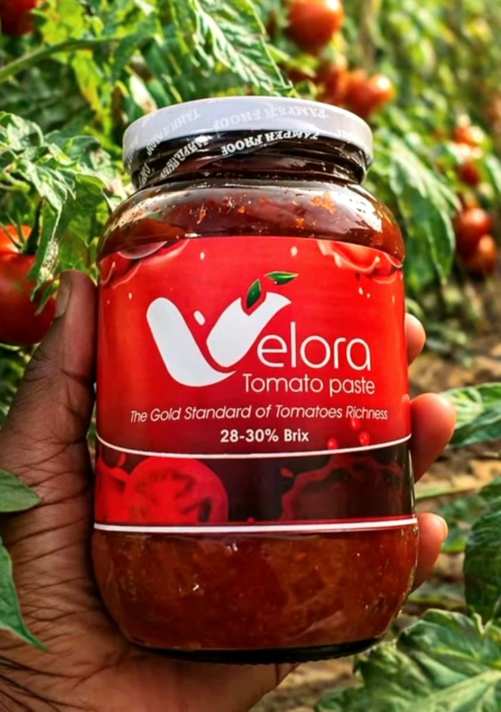

Our Portfolio
Premium Products

Premium Tomato Paste
Concentrated, rich, and 100% natural. The gold standard for Nigerian kitchens.

Premium Tomato Paste
A rich, deep-red concentrate made from the finest Nigerian tomatoes.

Premium Tomato Paste
Designed to be the perfect base for any dish.